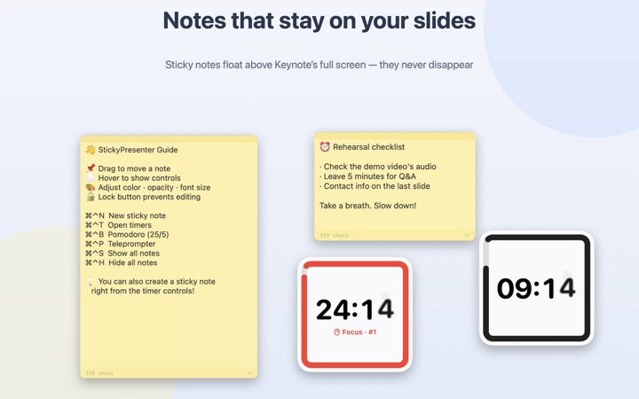
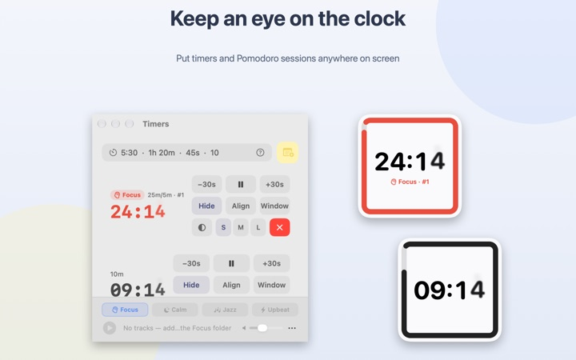
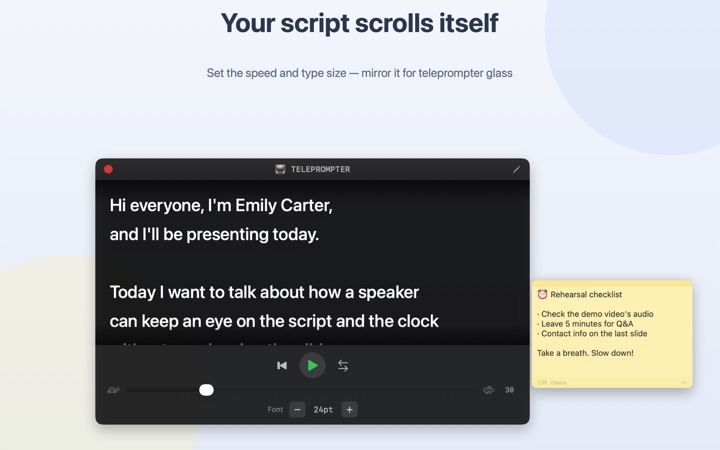
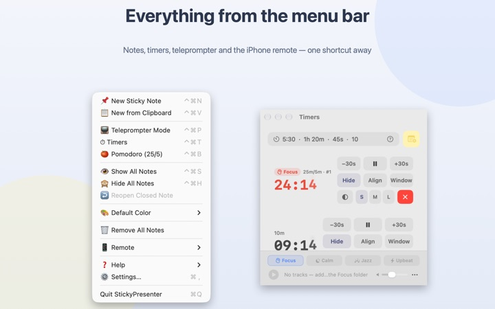

Your script and your time,
right on the slide
Put Keynote in full screen and your sticky notes and timer stay on top of it. They never take focus from the presentation app, so your clicker still advances the slides.
Every feature is free. Requires macOS 14 or later.

Put it on a slide
Type a time the way you would in the app. Tap 15s to see how the widget warns you as time runs out.
Where do your notes and the clock go while you present?
Presenter view eats a second screen, and glancing at your watch is something the audience always notices. Maybe you've taped a paper note to the laptop and watched it fall off. StickyPresenter pins your script and the time remaining right over the slide, where your eyes already are.
One glance tells you how long is left
A square widget in the corner shows the time remaining. It turns red as the end gets close, then chimes and flashes its border when time is up.
Type times the easy way, like 5:30 or 1h 20m, or type 25/5 for a Pomodoro that cycles between focus and break. Open a timer in its own window to share just that window over screen sharing or AirPlay.

Read your script and keep your eyes on the camera
The teleprompter scrolls your script at the speed you set and stops on its own at the end. Copy your script, press ⌘⌃P, and it opens with that text.
There's a mirror mode for teleprompter rigs with beam-splitter glass, and your speed and font size are still there next time.

Never leave the slide
It runs quietly in the menu bar, with no Dock icon and no extra windows to manage. Shortcuts like ⌘⌃N for a new note and ⌘⌃T for timers work even in full-screen Keynote.
On stage, the free iPhone app Remote Controller for Sticky lets you start and pause the timer, and move the widget off a slide it's covering.

Three steps to start
- 1
Open the app
A note icon appears in the menu bar, and a short guide opens the first time.
- 2
Add a note and a timer
Copy your script and press
⌘⌃V, then type your talk length into the timer field. - 3
Go full screen
Your note and timer stay right on top.
Shortcuts and time formats
- ⌘⌃N
- New sticky note
- ⌘⌃V
- New note from the clipboard
- ⌘⌃T
- Show or hide timers
- ⌘⌃B
- Start a Pomodoro (25 min focus, 5 min break)
- ⌘⌃P
- Teleprompter
- ⌘⌃S · ⌘⌃H
- Show or hide all notes
- 10
- A plain number means minutes
- 5:30 · 1:15:00
- Minutes:seconds, hours:minutes:seconds
- 1h 20m · 45s
- With units
- 25/5
- Focus/break, repeating until you stop it
Every shortcut uses Command (⌘) and Control (⌃) together and works while you're in another app. Timers go up to 99:59:59.
It's all free
StickyPresenter (Mac)
- Sticky notes in six colors, with opacity, font size and an edit lock
- Countdown timers, Pomodoro and a Notification Center widget
- Teleprompter with mirror mode
- Background music that starts with the timer
- Shortcuts that work from any app
Remote Controller for Sticky (iPhone)
- Start, pause, and add or take away 30 seconds
- Resize and move the widget from the stage
- One tap for a 3, 5, 10 or 15 minute timer
A separate free app. Needs iOS 17 or later and StickyPresenter running on a Mac on the same Wi‑Fi.
Nothing is locked behind a purchase. If it helps you, you can leave the developer a tip in Settings.
Questions
Can I show just the timer over screen sharing or mirroring?
Yes. Use the Window button on the timer's row to open it as a regular window. It then shows up in the window list for screen sharing and AirPlay, so you can share that window alone.
I hid a timer widget and can't find it.
Hover over that timer's row in the timer window and the widget's spot is outlined with a dashed line. Click Align to bring it back next to the timer window.
I closed a note by mistake.
Use Reopen Closed Note in the menu bar to bring back any of your last 20. Notes save as you type and return to the same spot when the app restarts.
A shortcut doesn't work.
If the shortcut table in the guide marks it as in use by another app, that app grabbed it first. Quit that app and it works again. No Accessibility permission is needed.
Why does the Chameleon theme ask for Screen Recording?
Chameleon reads the color of the screen behind the widget and matches it, which needs that permission. Nothing is saved or sent. Without it, the System, Light and Dark themes work as usual.
How do I add background music?
Pick a mood (Focus, Calm, Jazz or Upbeat) in the music bar at the bottom of the timer window and the app creates a folder for each mood. Drop your own tracks in and they play in order alongside the timer. No music comes with the app.
The iPhone remote can't find my Mac.
Check these in order: StickyPresenter is running on the Mac (look for the menu bar icon); both devices are on the same Wi‑Fi, not a guest network or cellular; Local Network is allowed for the app under Privacy & Security on both the iPhone and the Mac; and VPN is off.
The remote says the pairing code is wrong.
Enter the four-digit code currently shown under Remote in the Mac's menu bar. If you clicked New Pairing Code, only the new one works. After pairing once, the remote connects as soon as you open it.
Could someone else control my timer?
Not without your code. The Mac only accepts remotes that entered the right code, over an encrypted direct connection on your local network. If you've shown the code to someone, use New Pairing Code or Forget Paired Remotes under Remote in the menu bar.
Where are my notes and scripts stored?
Only on this Mac. There's no account and no ads, and nothing goes online except anonymous usage stats and feedback you choose to send.
Questions, bugs or feature ideas? Write to mizzking75@gmail.com.